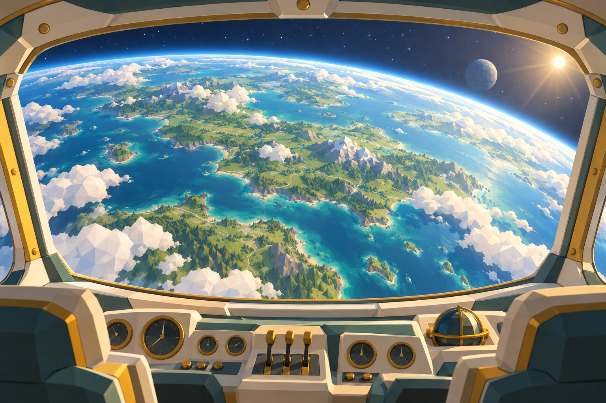
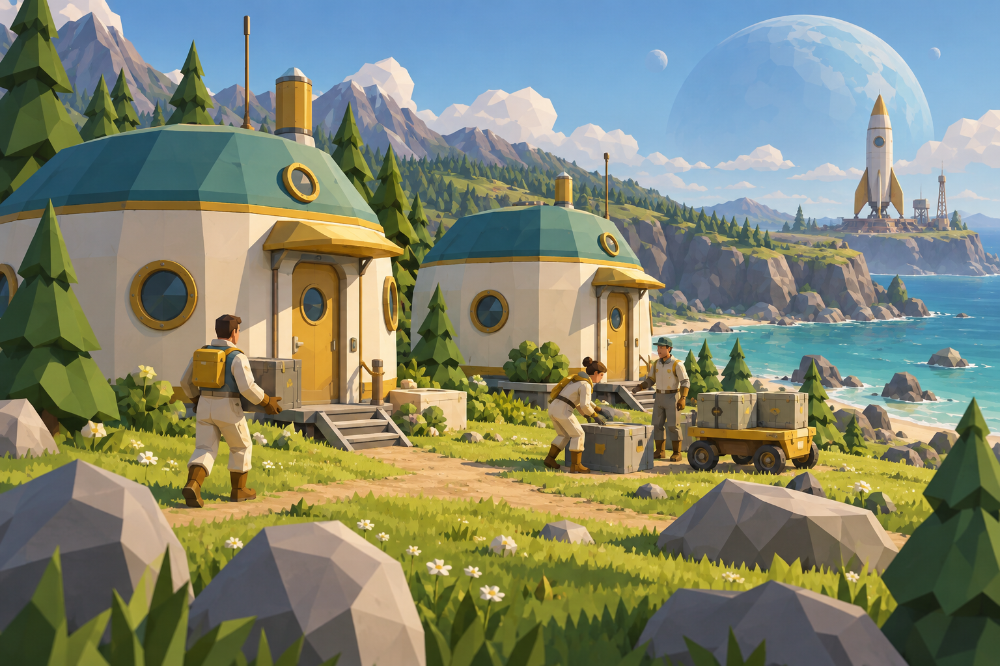
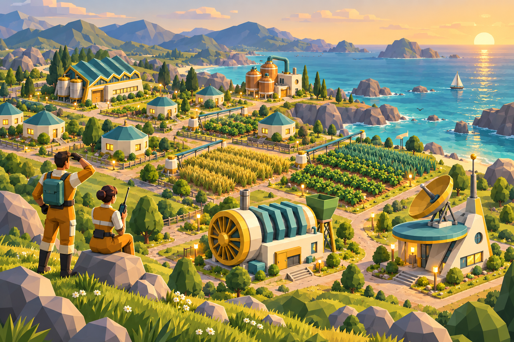

Welcome your first settlers.
Choose a patch of land and build your first homes. Fishing docks keep your people fed; a Commons brings the neighbourhood together.
A new home among the stars
A few settlers. A stretch of coastline. Everything you need to start something bigger.
Build an atom-punk colony on a planet you can turn in your hands. Feed your people, grow your industry, and make this little world a place worth coming back to.
Start your colonyFree devnet demo · Desktop browser · Solana wallet required

Small beginnings. Big plans.

Choose a patch of land and build your first homes. Fishing docks keep your people fed; a Commons brings the neighbourhood together.
Turn granules into concrete, fibers into clothing, and tubers into beer. Resources flow through a shared planet inventory. Balance what you make with what your people need.
More residents unlock new industries. Lay out fields, supply electricity, and bring radio to the colony. Satisfy every tier-one need to prepare your homes for the next chapter.
The pleasure of getting it working
A growing colony needs more than buildings. It needs the right connections. Keep an eye on your workers, your supplies, and the people who depend on them.

Built on Solana · Powered by MagicBlock
Your colony’s buildings, resources and population live on a MagicBlock Ephemeral Rollup. Production continues over time, ready for your next visit.
Connect your wallet and authorize a browser session. Your session key signs gameplay actions, so placing a building doesn’t mean opening your wallet again.
Each wallet can create one starting planet. The game sponsors account costs, and gameplay on the rollup has no transaction fees.
The browser and on-chain program share a Rust engine. The browser predicts your next action immediately; the program validates and records it.
The engine tracks fractional production, shared workforce, population needs, power and storage limits. It calculates stable rates and the next moment those rates must change. Scheduled updates handle those boundaries; stable periods can be advanced directly.
Terrain is deterministic. The program checks tile conditions and valid building placement rather than trusting terrain supplied by the browser.
Current demo: tier-one progression on Solana devnet. Starter planets exist on the Ephemeral Rollup; their progress is not settled to Solana’s base layer. Tier-two upgrades and additional playable planets are not available yet.
Source available for review. All rights reserved.
Your first settlers are waiting
Desktop browser and a Solana wallet. No SOL purchase needed for the demo.